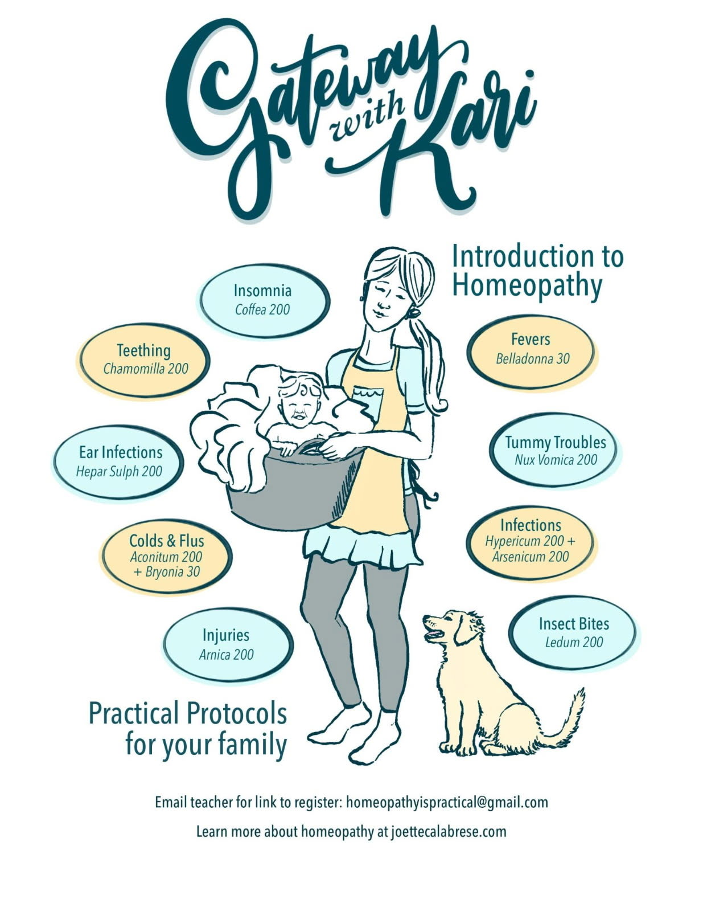

Insomnia — Coffea 200 Fevers — Belladonna 30 Teething — Chamomilla 200 Tummy Troubles — Nux Vomica 200 Infections — Hypericum 200 + Arsenicum 200 Colds and Flus — Aconitum 200 + Bryonia 30 Insect Bites — Ledum 200 Injuries — Arnica 200 Ear Infections — Hepar Sulph 200 Email teacher for link to register Learn more about homeopathy at joettecalabrese.com